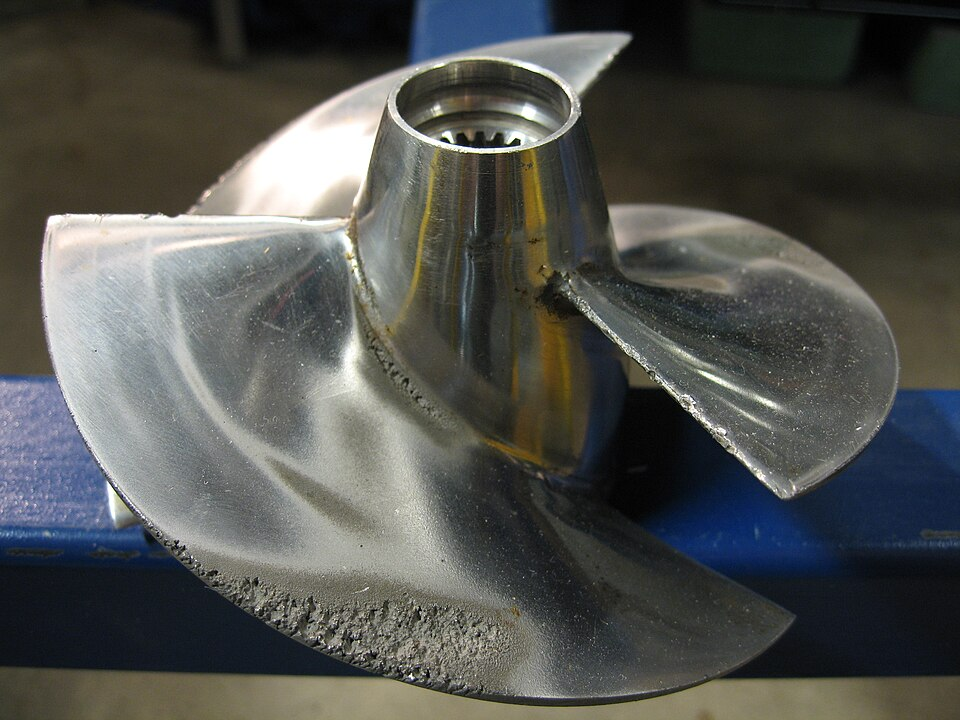
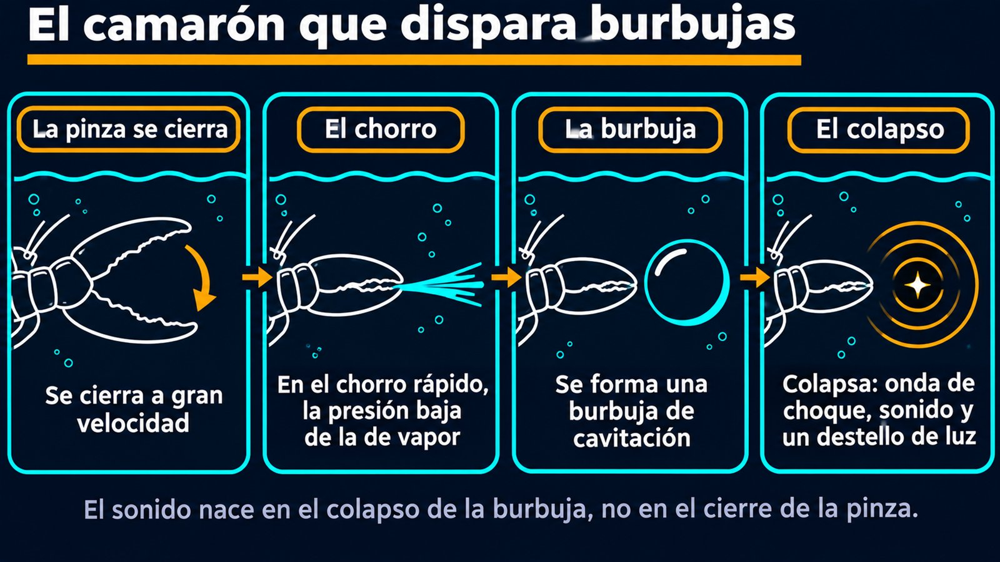

Hélices dañadas, el camarón pistola y la sonoluminiscencia
Para hervir agua no hace falta fuego. Alcanza con bajarle la presión. Si en algún punto de un flujo la presión cae lo suficiente, el agua fría se rompe y forman burbujas de vapor. Cuando esas burbujas llegan a una zona de mayor presión, colapsan con una violencia capaz de arrancar pedazos de metal. Un camarón diminuto usa ese mismo mecanismo como arma.
En su libro Cavitation and Bubble Dynamics, Christopher Brennen, del Instituto de Tecnología de California, distingue dos maneras de romper un líquido [1]. Una es calentarlo a presión aproximadamente constante hasta superar su temperatura de saturación: eso es ebullición. La otra es bajarle la presión a temperatura aproximadamente constante hasta llevarla por debajo de la presión de vapor: eso es cavitación [1]. La física de base es parecida; lo que cambia es el camino [1].
La presión de vapor del agua a 20 °C es de solo 2,34 kPa [2], más de cuarenta veces menor que la atmosférica. Según el teorema de Bernoulli, la presión baja donde el fluido se acelera, así que un chorro que sale de agua quieta a presión atmosférica llegaría a esa presión a unos 14 m/s, unos 50 km/h (un cálculo propio, sin pérdidas). No es una velocidad extraordinaria para el borde de una pala.
Para saber qué tan cerca está un flujo de cavitar, se usa el número de cavitación, que compara cuánta presión le sobra al líquido con la presión dinámica del flujo [1]:
Todo flujo tiene un valor de σ, cavite o no [1]. Cuanto más chico es, más propenso a cavitar: si la velocidad sube o la presión baja, σ cae hasta que empiezan a formarse burbujas [1].
Un dato curioso: un líquido perfectamente puro debería resistir tensiones enormes. Un cálculo de Brennen da una resistencia a la tracción del orden de 10 000 atmósferas para un líquido sin defectos, pero esos valores teóricos desafían toda la experiencia práctica [1]. El agua real se rompe mucho antes porque tiene puntos débiles: microburbujas y otras impurezas, llamadas núcleos, que siembran la cavitación [1].
La cadena y su eslabón flojo: calcular la resistencia de un líquido puro es como calcular la de una cadena suponiendo que todos los eslabones son perfectos. En la práctica se rompe por el peor eslabón, y el agua de un río o del mar está llena de ellos.
La historia empieza con los barcos. En la segunda mitad del siglo XIX, las hélices giraban cada vez más rápido y se comportaban de manera extraña. Reynolds intentó explicarlo en 1873 con aire arrastrado hacia las estelas de las palas, pero fue Parsons, en 1906, quien reconoció el papel de la vaporización y realizó los primeros experimentos de «cavitación», una palabra sugerida por Froude [1]. Lord Rayleigh, por su parte, publicó en 1917 un cálculo de la presión desarrollada durante el colapso de una cavidad esférica [3], y derivó la ecuación básica de la dinámica de burbujas, sin viscosidad ni tensión superficial [1].
Brennen considera el daño material el problema de ingeniería más ubicuo que causa la cavitación [1]. El colapso de una burbuja genera ondas de choque muy localizadas y microchorros de líquido. Cerca de una superficie sólida, esas perturbaciones producen tensiones intensas y transitorias, y su repetición por colapsos sucesivos causa fatiga local y el desprendimiento de pedacitos de material [1]. Eso deja un aspecto rugoso y cristalino, que se distingue de la erosión por partículas [1]. Si el culpable principal son los microchorros, las ondas de choque o las dos cosas se ha debatido durante muchos años [1].

Los camarones pistola cierran una pinza a gran velocidad y producen un chasquido. Se creía que el sonido venía del choque mecánico entre las dos partes de la pinza, hasta que M. Versluis, B. Schmitz, A. von der Heydt y D. Lohse lo filmaron con cámaras de alta velocidad en el año 2000 [4]. Al cerrarse, la pinza expulsa un chorro de agua, y en ese chorro rápido la presión baja por debajo de la de vapor [5]. Se forma una burbuja de cavitación; cuando la presión vuelve a su nivel normal, la burbuja colapsa [5]. El pico principal del sonido coincide siempre con el colapso, no con el cierre de la pinza [5]. Un modelo basado en la ecuación de Rayleigh-Plesset reproduce cuantitativamente las observaciones [6].

La onda de choque alcanza para aturdir o matar presas pequeñas cercanas [5]. Además, estos camarones viven en colonias tan grandes que su ruido forma un fondo permanente en buena parte de los mares poco profundos, y eso limita el uso del sonar [5].
En 2001, Lohse, Schmitz y Versluis informaron algo más: los camarones producen burbujas que destellan [7]. En el colapso se emite un breve destello de luz, igual que en la sonoluminiscencia de una burbuja única [6].
La cavitación aparece cuando la presión de un líquido cae por debajo de la de vapor y sus núcleos crecen como burbujas. El peligro llega cuando esas burbujas colapsan: ondas de choque y microchorros, repetidos, fatigan el metal. Por eso importa en hélices, bombas y turbinas, y puede aparecer en un golpe de ariete. Y un camarón le saca provecho.
Pregunta para la comunidad: A mayor profundidad, la presión del agua es mayor. ¿Cómo cambia el número de cavitación de una hélice cuando un submarino se sumerge a la misma velocidad? ¿Qué ventaja tendría eso para no hacer ruido?